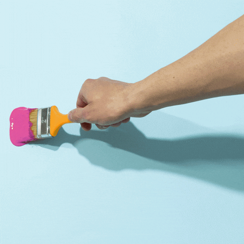

Rosalie Grubb
Human Creativity
Why is human-made art important?
Visual art is directly related to self-expression and creativity before AI’s intervention. While AI can augment and enhance human creativity in various ways, it cannot replace the uniquely human capacity for imaginative thinking, emotional expression, and ethical reasoning. By cultivating creativity in the absence of AI technologies, future generations can harness the full potential of human intelligence to address complex challenges and shape a more vibrant world.

What is human-made art?
Let's learn how visual art is made by hand!
Painting

How do you paint?
Select any color of your choosing from the paint palette and drag it across the screen using your mouse. Start by drawing a flower. First draw a circle in the middle of the sceen and then five semi-circles around it. Next draw line going from the edge of the circle towards the bottom of the screen. Then add two curved lines to either side of the bottom of the straight line. Now, draw a new flower anyway you want or feel.
Now, let's learn another medium!
Visual art has even more to offer!
There is also pastels, watercolor, charcoal, sewing, knitting, just to name a few.